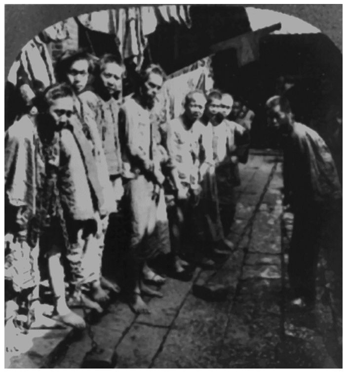
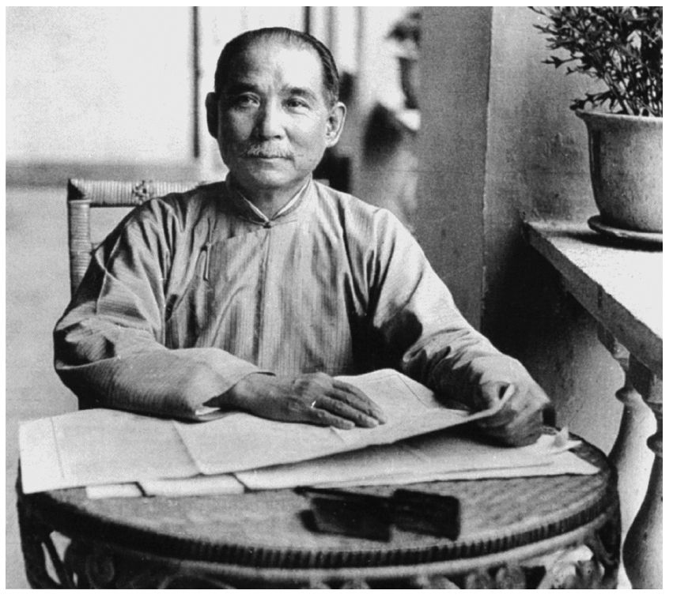

日本击败中国引起了年轻的光绪皇帝的注意，他意识到有必要进行彻底的改革。1898年夏，他颁发了一系列被统称为“百日维新”的改革法令。它们将地方政府集中在北京的领导之下，建立以欧洲学问为基础的新学校，鼓励西式生产方法，按西方方式建立一支由应征者组成的新式军队。这些措施始终停留在纸上，因为军队支持始终维护旧秩序的皇太后。这时，她废黜了年轻的皇帝，亲自摄政；废除了变法法令，杀害了六位维新派领导人。
“百日维新”的失败使保守派获得了所有的权力。他们积极地引导社会和政治上对外国人的不满情绪。排外的秘密团体在朝廷保守派和地方统治者的鼓动下，组织了地方民兵以抵抗外国的侵略。这些团体中最为著名的是义和团，即人们通称的义和拳。义和团因得到官方的默许开始袭击外国人，到1900年时，华北的许多中国基督教徒和外国人被杀。当欧洲海军分遣队开始在天津登陆时，义和团便向所有的外国人宣战，并且包围了北京的外国公使馆。但在几个月内，八国联军救出了公使馆人员，帝国朝廷逃离首都。中国再次被迫接受丧权辱国的和约，其条款包括进一步承认商业特许权和赔款3.33亿美元。

图223 中国广东的监狱，即将被处决的义和团的拳民。
“百日维新”和义和团运动的失败清楚地表明，试图通过自上而下的改良来使中国现代化是行不通的。唯一的办法是从下面进行革命；这一革命于1911年爆发，它最终推翻了清朝，以共和政体来取代。
革命派的领导人和思想家是孙中山（1866—1925年）。同此前著名的维新派领导人相比，孙中山是一位奇特的人物。他并不是上流社会的文人，事实上，他所受到的西方教育并不少于他所受到的中国教育。孙中山出生于广东香山县（今中山市）；这里受外国影响的时间长于中国其他任何地区。他13岁时来到在檀香山的哥哥那里，住了五年，并在一所英国教会寄宿学校念完了中学。然后，他进了香港皇仁书院，毕业后又在香港西医书院学习，1892年获得医学学位。因此，孙中山受到的是良好的科学教育，他完全可以凭着这一点获得财富和地位；但他却同情贫苦大众，总是为他们的福利牵肠挂肚。
孙中山怀着这种感情，不久便放弃了自己的职业。1895年中国惨败于日本这一点使他确信，这个国家的政府已腐败透顶，只有革命才能提供救世良方。孙中山主要得到了海外中国商人的支持。在国内，只有少数学生和商人受到他的思想的影响，而广大民众仍麻木不仁。在广东，小规模的革命党人起义虽遭镇压，但在1911年10月10日，汉口一家炸弹制造厂的意外爆炸，导致了附近清朝军队的兵变。尽管缺乏配合，革命运动仍迅速席卷全国。这时在美国的孙中山立刻回国，并于1911年12月29日被临时革命议会选举为中华民国临时大总统。

图224 孙中山（1866—1925年）是中国1911年共和革命之父。
尽管孙中山名义上是领导人，他却未能控制全国。孙中山建立了一个新的政党——国民党；1913年4月国会选举时，国民党获得了大多数席位。但是，实际权力掌握在官僚和军阀手中，他们几乎一直无视名义上在北京统治这个国家的民国政府。相反，他们残酷地掠夺农村，把中国拖进了野蛮的无政府动乱状态中。1926年以前的民国初期若干年是中国历史上最糟糕的时期之一。
以下几个因素可以解释中国这一革新尝试的悲惨结果。首先，中国幅员辽阔，这使得中国内地许多年来未受到与西方交往的影响。内地相当于一个巨大的贮藏所，几十年中仍持续为这个国家提供着传统思想的文官候选人。这是由知识分子组成的官僚阶层，而他们专心于儒家经典著作，因此，他们更强调的是伦理原则，而不是手工技艺或战争技术。其次，这一统治阶级因以下事实而进一步受到约束：除佛教外，中国没有或几乎没有借用国外东西的传统。因此也就毫不奇怪，尽管19世纪后半叶中国的确发生了变化，但它的变化速度却远远落后于对西方作出反应的其他国家。最后，受过西方教育的中国年青一代也应负部分责任。他们中的一些人虽然在民国初期起了主要作用，但他们却试图在中国建立一些与他们从国外，尤其是从美国观察到的制度完全一样的制度。他们所建立的制度自然对中国人民毫无意义，很快就在中国的政治现实面前土崩瓦解。